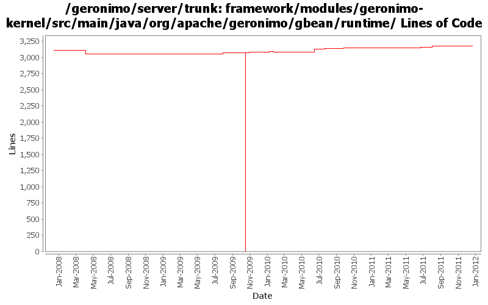

[root]/framework/modules/geronimo-kernel/src/main/java/org/apache/geronimo/gbean/runtime

| Author | Changes | Lines of Code | Lines per Change |
|---|---|---|---|
| Totals | 68 (100.0%) | 3440 (100.0%) | 50.5 |
| djencks | 32 (47.1%) | 3218 (93.5%) | 100.5 |
| gdamour | 6 (8.8%) | 117 (3.4%) | 19.5 |
| xuhaihong | 4 (5.9%) | 38 (1.1%) | 9.5 |
| jdillon | 17 (25.0%) | 35 (1.0%) | 2.0 |
| gawor | 4 (5.9%) | 20 (0.6%) | 5.0 |
| genspring | 2 (2.9%) | 6 (0.2%) | 3.0 |
| rickmcguire | 1 (1.5%) | 3 (0.1%) | 3.0 |
| jaydm | 1 (1.5%) | 2 (0.1%) | 2.0 |
| dwoods | 1 (1.5%) | 1 (0.0%) | 1.0 |
GERONIMO-6240 Make several base geronimo functions (kernel, deployer, etc) DS services and make the car-maven-plugin take advantage of that. Server assembly doesn't work yet, builds framework.
3 lines of code changed in 1 file:
A minor change to the last commit, the correct count of service names is kept
1 lines of code changed in 1 file:
GERONIMO-6100 Limit the recorded dependency and reference number info for stateReason
35 lines of code changed in 1 file:
GERONIMO-5744: Support for Equinox-specific classloader that can convert bundle:// urls into regular file:// or jar:// urls and make things easier for 3rd party libraries. The Equinox-specific classloader is disabled by default for now
8 lines of code changed in 1 file:
Make it easier to view the builder list when debuging the deployment process.
5 lines of code changed in 1 file:
Show all of all fail-to-start exceptions
7 lines of code changed in 1 file:
when exposing gbean as a service always set abstract name property and set default osgi jndi service name property if none was specified
7 lines of code changed in 1 file:
GERONIMO-5380 Allow exposing gbeans as osgi services (or service factories). Replace the specialized code in connector with this new generic code. This is not serialziation compatible with old GBeanInfo and GBeanData
76 lines of code changed in 1 file:
XBEAN-148 use new xbean-bundleutils
1 lines of code changed in 1 file:
genericize a few kernel classes a bit more
2 lines of code changed in 1 file:
extact some code into a separate utility function
1 lines of code changed in 1 file:
add DelegatingBundle that can delegate calls to multiple Bundles and remove classSource support
4 lines of code changed in 1 file:
GERONIMO-5021 allow gbean classes to be loaded from another plugin, plus use in jetty and jasper
19 lines of code changed in 1 file:
Revert an unexpected change
1 lines of code changed in 1 file:
GERONIMO-5008 Create util methods for all the Geronimo components
1 lines of code changed in 1 file:
More plugin cleanup
3 lines of code changed in 1 file:
GERONIMO-4907 Complain about all attempts to set non-existent gbean properties at once
11 lines of code changed in 1 file:
GERONIMO-4916 step 2 move sandbox osgi framework into trunk
3073 lines of code changed in 9 files:
GERONIMO-4916 step 1 remove old framwork
0 lines of code changed in 9 files:
Fixing a typo in error message.
1 lines of code changed in 1 file:
GERONIMO-3003 Encrypt poassoreds and morked attributes in serialized gbeans and config.xml. Modified from patch by Jack Cai, many thanks.
26 lines of code changed in 1 file:
GERONIMO-4495 Invoking stop method on a gbean whose instancestate is destoryed caused that gbean in the stopping state. Patch provided by Ivan (xuhaihong).
1 lines of code changed in 1 file:
GERONIMO-4239, sort of. Use transitive depenedencies in c-m-p everywhere. This may break stuff.... let me know
0 lines of code changed in 2 files:
More loggers back to statics
1 lines of code changed in 1 file:
Start of custom SLF4J muck for Geronimo
16 lines of code changed in 2 files:
More loggers back to static
12 lines of code changed in 4 files:
(GERONIMO-3985) Use SLF4J as the primary logging facade for Geronimo
6 lines of code changed in 10 files:
*** Definition of annotations streamlining the definition of GBeanInfos.
* @GBean: optional annotation defining the name and j2eeType of a GBean.
If this annotation is not specified, then the default name is assumed to be
the class (simple) name and the default j2eeType is GBean.
* @Priority: optionalannotation defining the priority of a GBean.
* @ParamSpecial: annotation defining a GBean special attribute to be
injected.
* @ParamAttribute: annotation defining the GBean attribute to be injected.
* @ParamReference: annotation defining the GBean reference to be injected.
* @Persistent: annotation for setter methods turning the corresponding GBean
attributes into persistent attributes.
* @Reference: annotation for setter methods turning the corresponding GBean
attribute into a GBean reference.
Note that at most one constructor must be annotated with @ParamSpecial,
@ParamAttribute or @ParamReference.
*** Add a GBeanInfo factory strategy, GBeanInfoFactory, which allows us to
plug-in an annotation based GBeanInfo factory implementation.
*** Use annotation based GBeanInfo declaration for clustering related GBeans.
*** Use xbean-reflect to build GBean instances.
This fixes GERONIMO-3952 - Definition of GBeanInfo via annotations
117 lines of code changed in 6 files:
Changed the log level on the proxy/no proxy message from 'warn' to 'info'
2 lines of code changed in 1 file:
GERONIMO-3732 steps 1, 2. Move plugin management and some jsr88 base code into a new module
0 lines of code changed in 2 files:
GERONIMO-3708 turn off gbean reference proxies
0 lines of code changed in 2 files: